2.0: Content Views
Content Views
What can a Content View be used for?
- To stage content through environments (Dev, Test, Production).
- To filter the contents of a repository (include a package or exclude certain errata, for example).
- To have multiple snapshots of the same repository and/or puppet modules.
Definitions
- Content View - snapshot of one or more repositories and/or puppet modules.
- Composite Content View - a Content View that contains a collection of other Content Views.
- Filter - provides finer grained control over content in a Content View. Can be used to include or exclude specific packages, package groups, or errata.
- Publishing - Content Views are ‘published’ in order to lock their contents in place. The content of the Content View is cloned and all filters applied. Publishing creates a new version of the Content View.
- Promoting - Content Views can be cloned to different Lifecycle Environments (Dev, Test, Production).
General Workflow
First create a product and repository in the library environment and populate the repository with content (by syncing it or uploading content).
A Content Host can now register directly to library and be attached to the content therein. Updates will be available as soon as new content is synced or uploaded.
To utilize Content Views for filtering and snapshoting:
- Create a Content View
- Add the desired repository and/or puppet modules to the Content View
- Optionally create one or more Filters to fine tune the content of the Content View.
- Publish the Content View
- Attach the Content Host to the Content View
- Optionally promote the Content View to another environment
At this point the Content Host will no longer be getting content directly from Library, but from the Content View. Updates to library will not affect this Content Host.
Note that all of the actions below can also done with hammer, the CLI tool, and examples are given at the end of each section.
Creating a Content View
To create a Content View using the web UI, navigate to:
Content > Content Views
Click the Create New View button on the top right of the screen.
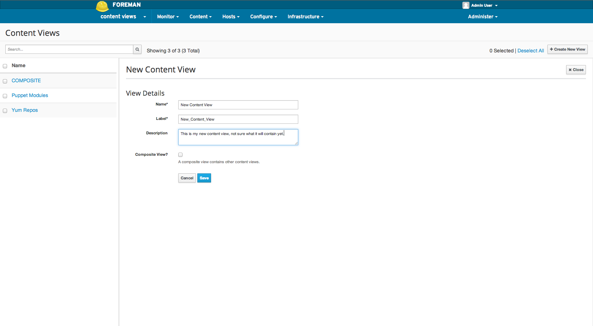
From the CLI:
hammer content-view create \
--organization="Default Organization" \
--name="New Content View" \
--description="This is my new content view."
Creating a Composite Content View
To create a Composite Content View using the web UI follow the above steps for Creating a Content View but check the “Composite View?” checkbox.
From the CLI:
hammer content-view create \
--organization="Default Organization" \
--name="New Composite Content View" \
--description="This is my new composite content view." \
--composite
Adding Repositories
Adding a repository to a Content View means whenever a Content View is published, all of the content contained within the repository at that time is included in the Content View.
If the repository is synced after publishing the Content View, the Content View will contain the state of the repository prior to syncing.
A new version of the Content View must be published in order for the new version to get the contents of the newly synced repository.
To add a repository using the web UI, navigate to:
Content > Content Views > Select the desired Content View > Content (within sub navigation) > Repositories
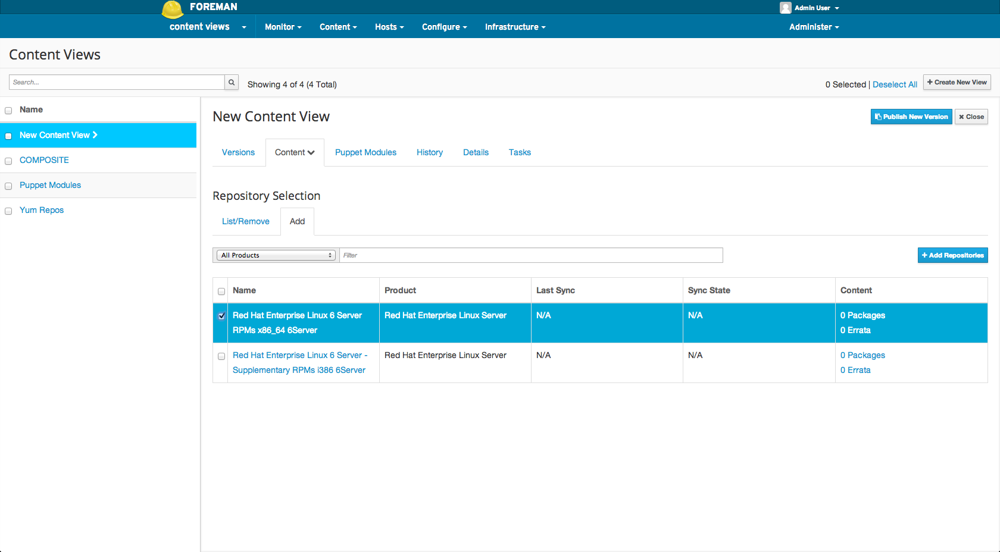
From the CLI, adding a repository:
hammer content-view add-repository \
--organization="Default Organization"
--name="New Content View" \
--repository="CentOS 6.5"
Adding a Puppet Module
Adding a puppet module to a Content View means that whenever the Content View is published the puppet module is locked to the version selected.
If the “Use Latest” version is selected then the puppet module will be “frozen” at the latest version available when the Content View is published.
A new version of the Content View must be published in order for the new version to get any updated puppet module.
To add a puppet module using the web UI, navigate to:
Content > Content Views > Select the desired Content View > Puppet Modules (within sub navigation)
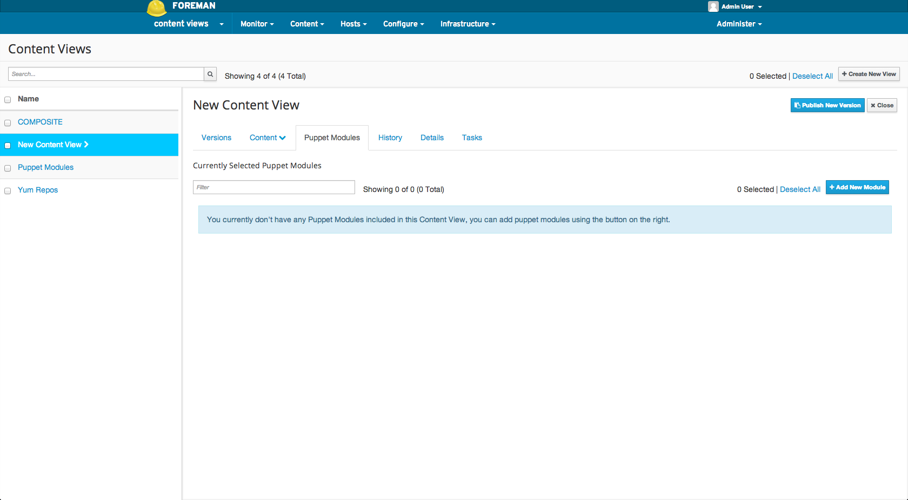 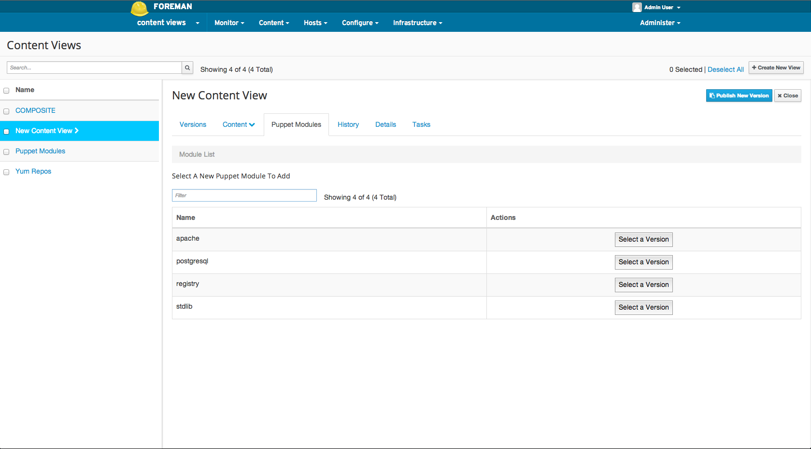 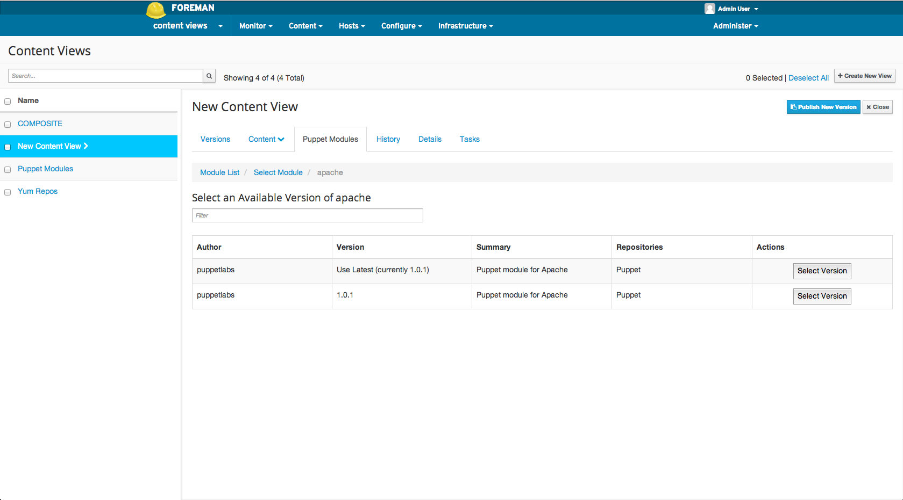 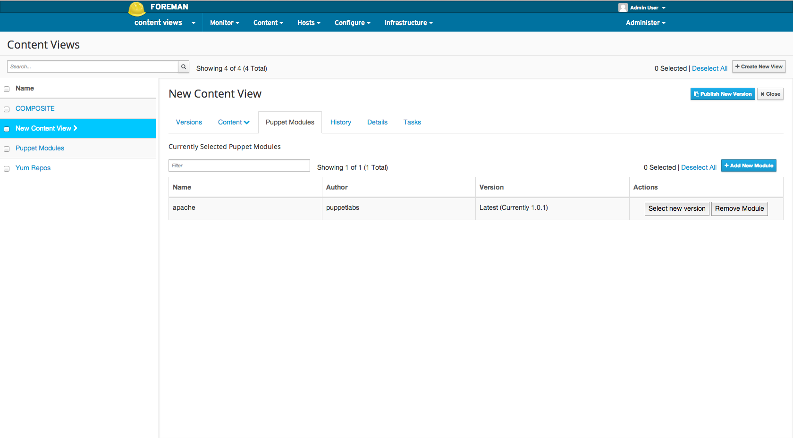
From the CLI, first find the UUID of your puppet module from the list:
hammer puppet-module list \
--organization="Default Organization" \
--repository "Puppet Modules"
Then add the puppet module:
hammer content-view puppet-module add \
--organization="Default Organization" \
--content-view="New Content View" \
--uuid=91cc9bb7-dbb3-4798-b50a-45173b763cbb
Adding Content Views to a Composite Content View
Adding a version of a Content View to a Composite Content View means whenever the Composite Content View is published, all of the content contained within the specific version of that Content View is contained in the Composite Content View.
If the Content Views contained within the Composite Content View are updated (i.e. a new version is published) or if their content is updated after publishing the Composite Content View, the Composite Content View will only contain the versions of the Content View(s) prior to syncing.
A new version of the Composite Content View must be published in order for it to get the updated Content Views.
To add a Content View to a Composite Content View using the web UI, navigate to:
Content > Content Views > Select the desired Content View > Content (within sub navigation) > Repositories
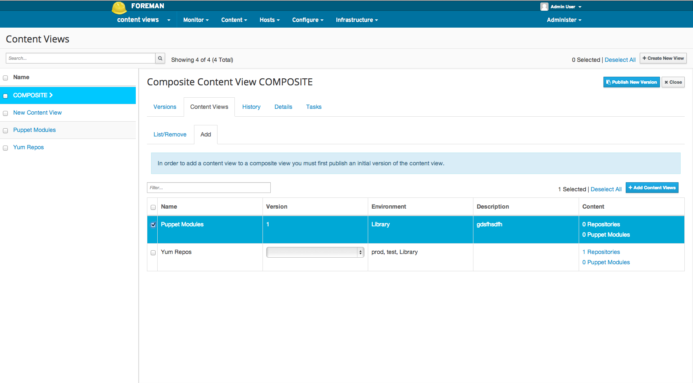
Find the Content View ID of the specific version of the Content View to add:
hammer content-view version list \
--organization="Default Organization" \
--content-view="New Content View"
From the CLI, add a Content View to a composite Content View:
hammer content-view update \
--organization="Default Organization" \
--content-view="New Composite Content View" \
--component-ids=2
Creating a filter
If only using Content Views as snapshots, Filters are unnecessary. If the desire is to filter what content make it into the view, such as blacklisting a package by name or version, or blacklisting errata by date or type, Filters can help accomplish these tasks.
To create a new Content View Filter using the web UI, navigate to:
Content > Content Views > Select the desired Content View > Content (within sub navigation) > Filters > New Filter
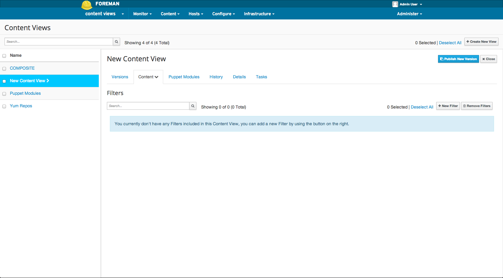 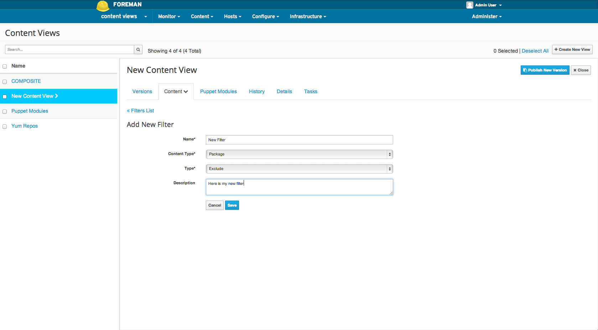 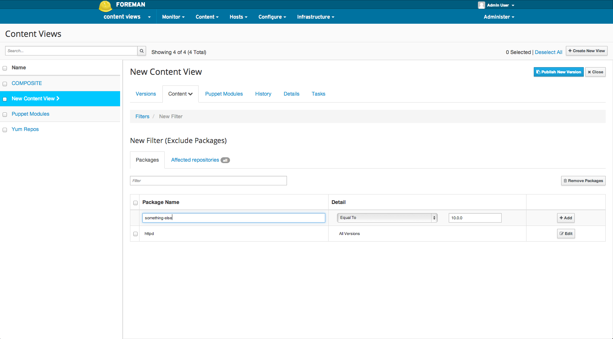
From the CLI, adding a Content View Filter:
hammer content-view filter create \
--organization="Default Organization" \
--content-view="New Content View" \
--name="New Filter" \
--inclusion=false \
--type=rpm
From the CLI, adding a Content View Filter rule:
hammer content-view filter rule create \
--organization="Default Organization" \
--content-view="New Content View" \
--content-view-filter="New Filter" \
--name="something-else" \
--max-version="10.0.0" \
--min-version="10.0.0"
Selecting which Repositories to Filter
By default a Filter applies to all repositories (present and future) in the Content View. It’s possible to select which repositories within the Content View apply to the filter.
This is useful, for example, if the desire is to exclude errata from only certain repositories in a view.
To select which repositories to Filter in the web UI, navigate to:
Content > Content Views > Select the desired Content View > Content (within sub navigation) > Filters > Select the desired Filter > Affected repositories (within sub navigation)
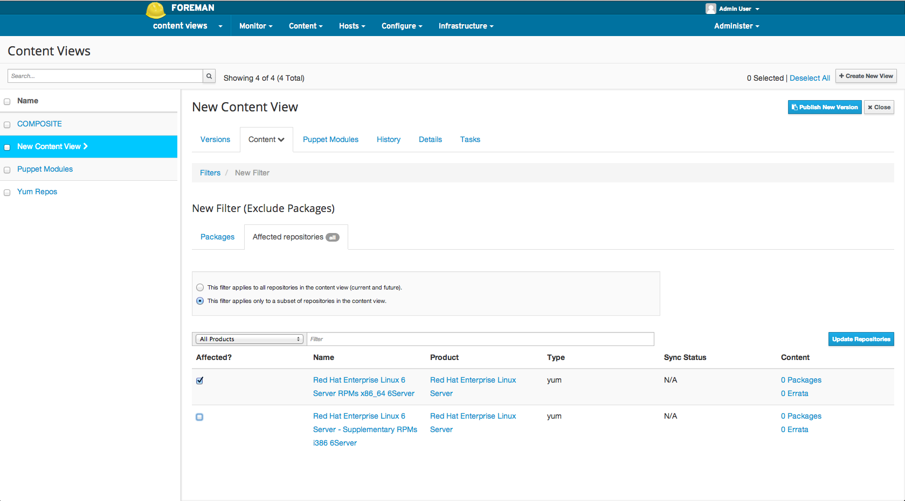
From the CLI, adding a Content View Filter:
hammer content-view filter update \
--organization="Default Organization" \
--name="New Filter" \
--repository-ids=2,3,7
Publishing a Content View
Publishing a Content View produces a new version of the content view that is subsequently promoted to the Library lifecycle environment.
This newly published version of the content view is now available to any content host registered to Library.
To publish a Content View, in the web UI, navigate to:
Content > Content Views > Select the desired Content View > Publish New Version
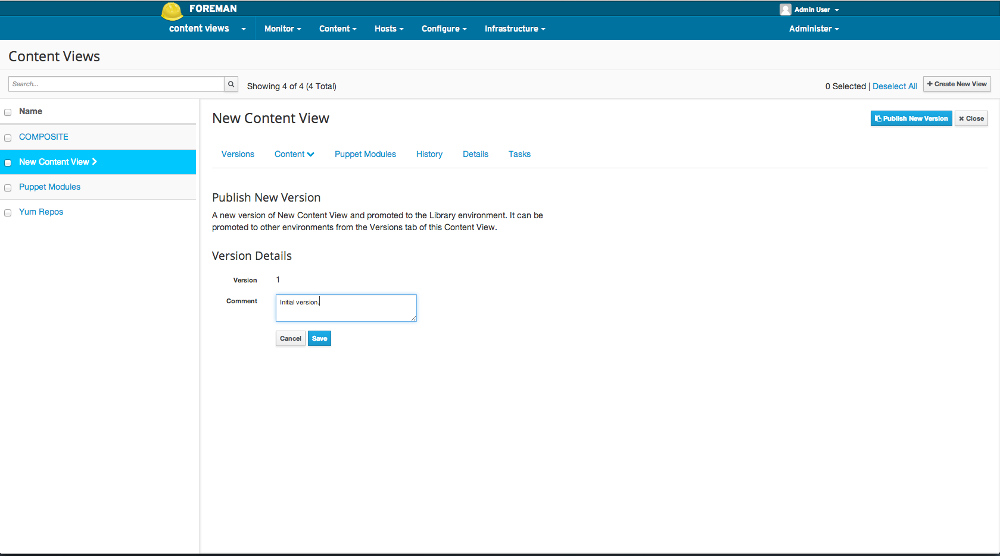 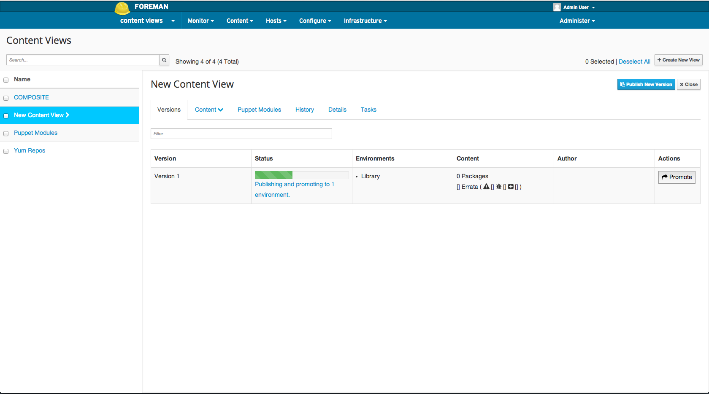
From the CLI:
hammer content-view publish \
--organization="Default Organization" \
--name="New Content View"
Registering a Content Host
To register a Content Host that is not currently registered to the Content View, simply use subscription manager on the client Content Host and run:
subscription-manager register --org=ACME_Corporation --environment=Library/my_rhel_view
This would register the Content Host to the Library environment and the my_rhel_view Content View.
If the Content Host is already registered, from the UI:
Hosts > Content Hosts > Select the desired Content Host
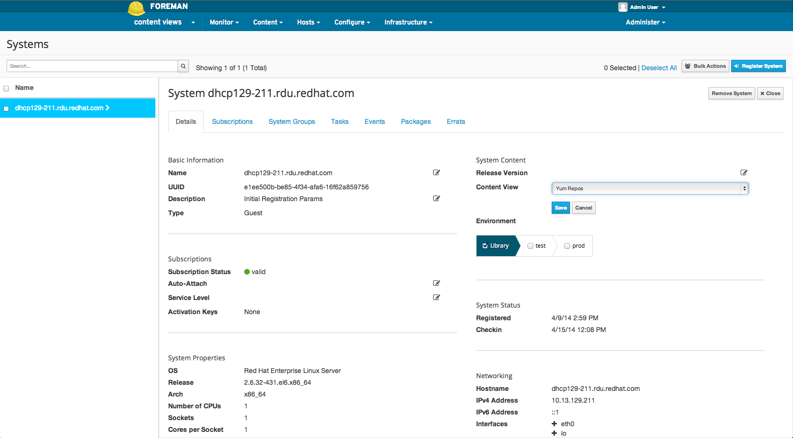
From the CLI:
hammer content-host update \
--organization="Default Organization" \
--name="dhcp129-211.rdu.redhat.com" \
--content-view="New Content View" \
--lifecycle-environment="Library"
Promoting a Content View
Initially a Content View is published to Library as version 1. If there are Content Hosts in other environments that would like to consume this Content View, a version of the content view will need to be promoted to those environments.
For example, given the Content View “New Content View”, version 1 of which has been promoted to the Dev environment. Any Content Hosts in Dev attached to the Content View would remain at version 1 until a version 2 is both published and promoted to the Dev environment.
To promote a Content View in the Web UI, navigate to:
Content > Content Views > Select the desired Content View > Versions (within sub navigation) > Click promote for desired version
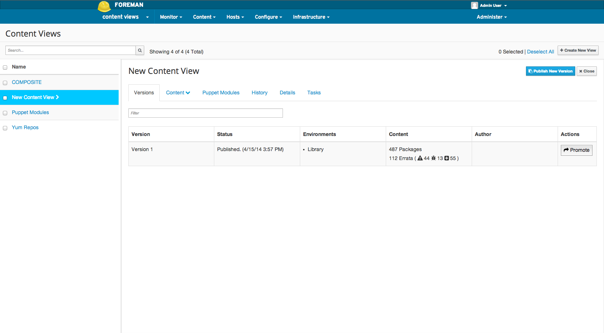 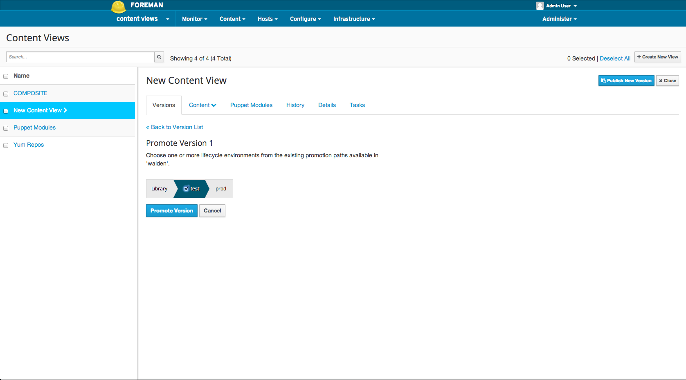 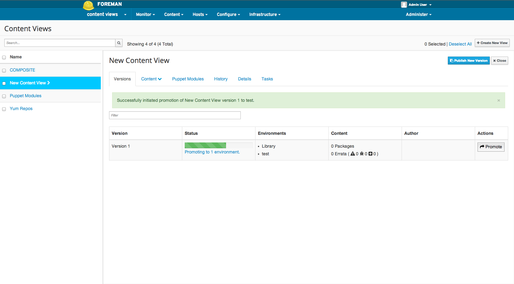
To promote a Content View in the CLI:
hammer content-view version promote \
--organization="Default Organization" \
--content-view="New Content View" \
--to-lifecycle-environment="Test" \
--version 1